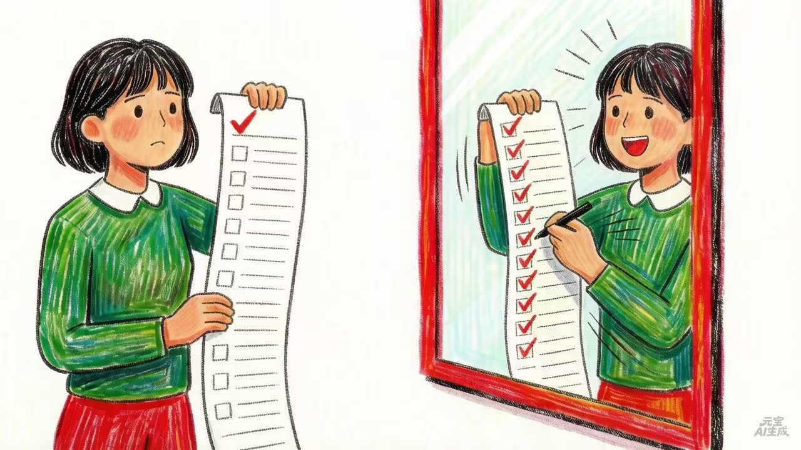

今天在整理待办清单，给一项任务拟了个DDL。AI瞄了一眼，一句话没说给我把日期往前挪了两天。
我：？？？
我：怎么回事儿？你怎么改我DDL？
AI：因为这是工作事项，DDL写在周日，工作事项不适合在周日结尾。而你的习惯 —— 能提前做完的事绝不往后拖。放不了周日那就放周五，不等下周一。
我盯着那个被改掉的日期愣了半天。好吧，这的确很我。
但 ——
我：所以你觉得我做事不拖延？
AI：你处理事情的习惯是能早做完就早做完，不往后拖。
差点给我笑死。
我有拖延症这件事，在我心里早就是证据确凿了。
比如有一件事，我第一次意识到该做，是两年前。
两。年。前。
这两年我做了什么呢？读了很多相关的文章，分析了好几轮利弊，和朋友聊了好多次。就是没有真正动手。
这叫不拖延？
我拉着AI认真聊了一下。
我：两年前这事儿，你来说说，我到底是拖延还是不拖延？
AI：你拖的不是目标，是路上让你害怕的那一步。那件事你是真心想做，但每往前走一步都带着点什么 —— 万一失败呢、万一白忙一场呢 —— 所以绕着走。
我：那我总是拖着不去注册账号、填表那些呢？我也不害怕呀，就是嫌烦。
AI：那是另一种。纯粹因为枯燥，没有意义感，让人掉电飞快，就一直在待办清单上躺着。这两种加在一起，叫选择性拖延。
对真心想做、没什么阻碍的事：冲。对心里发怵或者嫌麻烦的事：拖。
我：所以你没说错，我也没说错？
AI：对，我们都只摸了大象的一部分。我摸的是象鼻子，你摸的是象尾巴。
嗯……听起来似乎很有道理，但总觉得哪里有些不对。
我：等一下，你是能看到我的DDL在往前推，但有些事情我根本没启动过，你知道吗？
AI：比如？
我：比如……这会儿吧，我本来该去预约一个拖了半年的体检，结果发现自己在写这篇文章。
AI：你知道这说明什么吗？你拖延的时候不是在刷手机 —— 你在做另一件"有意义的事"。表面上在认真做事，实际上在逃避。
我：……
AI：而且你自己一开始没察觉，对吧？
好吧。
所以到底谁对？
她看到了我做了什么，但没看到我没做什么。我呢，光记得自己拖了多少事，倒忘了自己其实也利索地做完了不少。
真相大概是：有些事我毫不拖延，有些事我真的拖，而且我的拖延特别擅长伪装成"在认真做事"。
AI这面镜子，确实照到了我平时看不到的角度。
但这镜子是我自己装的。它的盲区，也是我的盲区。

关于“盲区”这个问题嘛 ——
下篇再聊，byebye～～